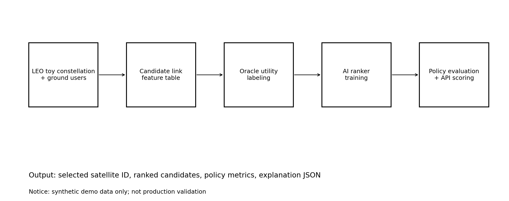
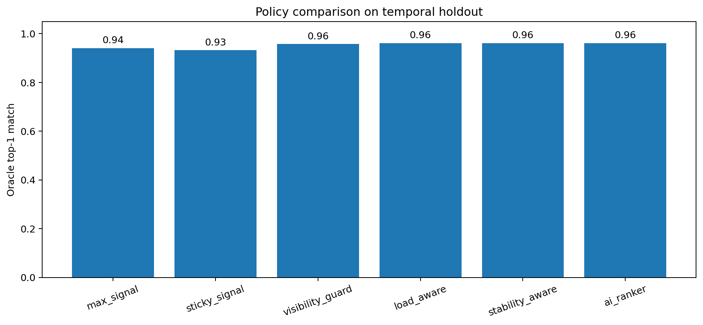
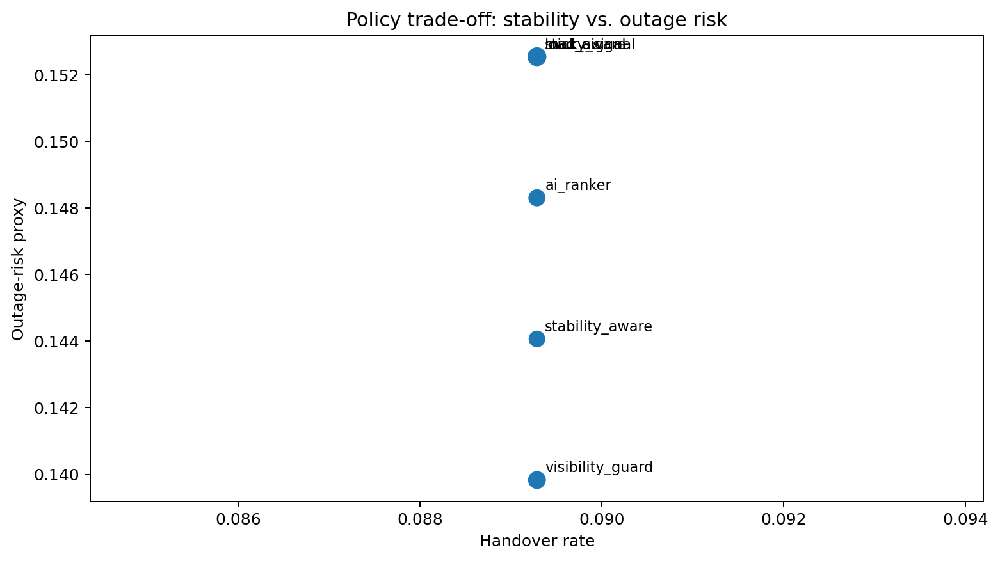
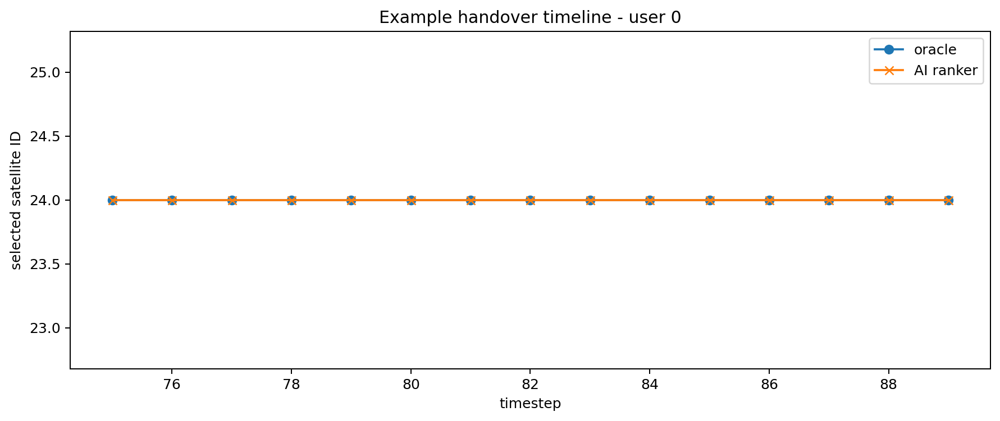
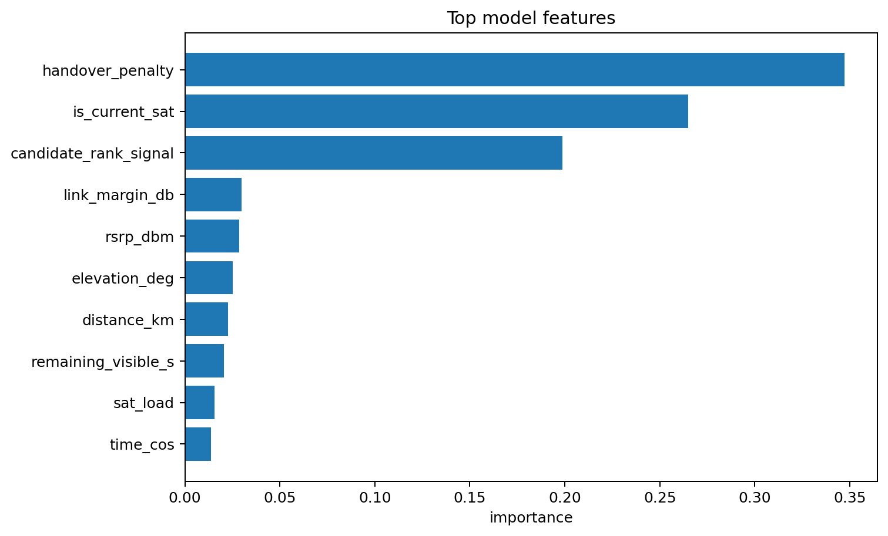

Project Summary
Problem
LEO 위성은 빠르게 이동해 가시 위성, 신호 품질, 부하, 남은 연결 시간이 계속 변합니다.
Approach
핸드오버 결정을 candidate satellite ranking 문제로 바꾸고, signal/visibility/load/stability를 함께 봅니다.
Output
선택 위성 ID, 후보별 score, baseline 비교 metric, FastAPI scoring/explanation endpoint를 제공합니다.
Architecture

Example Metrics
Synthetic simulation과 temporal holdout split으로 만든 공개용 예시 결과입니다. 실제 산업 성능으로 해석하면 안 됩니다.
| Policy | Oracle top-1 | Handover rate | Mean visibility | Outage-risk | Oracle regret |
|---|---|---|---|---|---|
| max_signal | 0.941 | 0.089 | 259.2s | 0.153 | 0.077 |
| sticky_signal | 0.932 | 0.089 | 257.8s | 0.153 | 0.088 |
| visibility_guard | 0.958 | 0.089 | 265.3s | 0.140 | 0.056 |
| load_aware | 0.962 | 0.089 | 262.6s | 0.153 | 0.029 |
| stability_aware | 0.962 | 0.089 | 265.0s | 0.144 | 0.022 |
| ai_ranker | 0.962 | 0.089 | 263.0s | 0.148 | 0.036 |
Visual Evidence




Run Locally
python -m venv .venv
source .venv/bin/activate
pip install -r requirements.txt
PYTHONPATH=src bash scripts/run_full_pipeline.sh
PYTHONPATH=src uvicorn leo_handover.api:app --reloadAfter uploading, edit this page or README with your final GitHub repository URL.